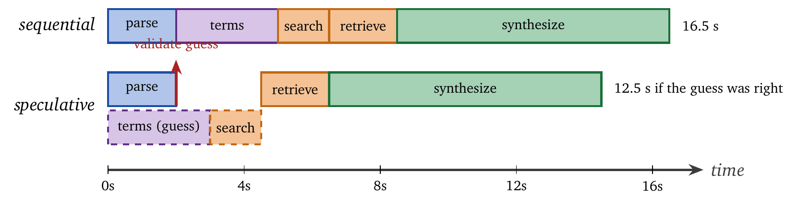
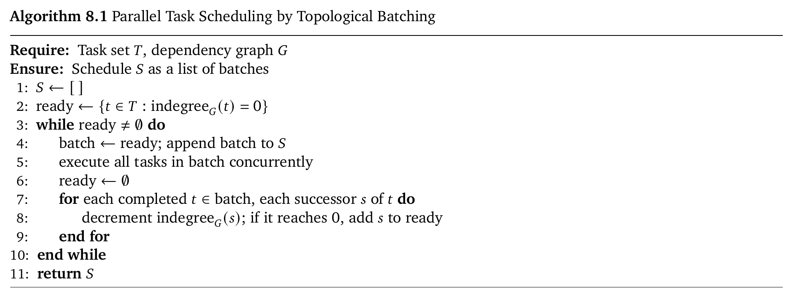
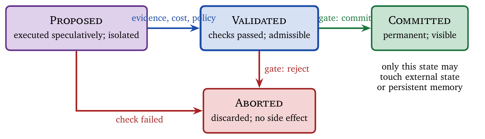
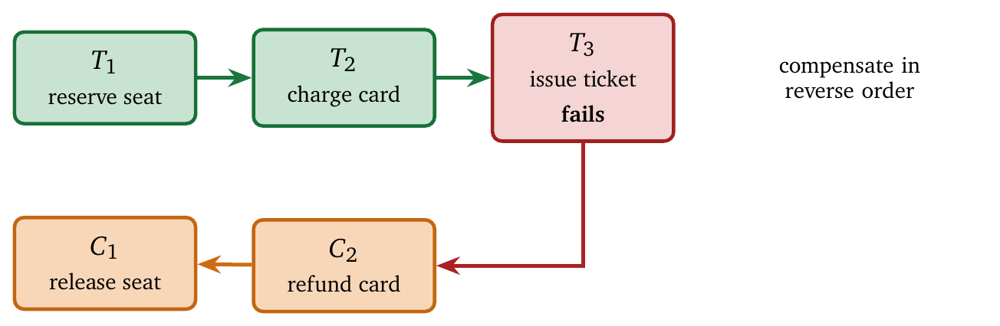

« Action Selection Under Budgets | Contents | Risk-Aware Gates: Verification, Abstention, Refusal »
Part II: Control and CommitmentChapter 8. Speculation, Parallelism, and Commit Protocols
Watch an agent work and most of what you see is waiting.
The default loop runs observe, decide, act, observe, decide. It is safe, because every decision is made with the latest evidence. It is also almost entirely idle. Ten steps at five seconds each is fifty seconds, and for most of that time the model is blocked on a tool that has no idea anyone is waiting. Users leave and service-level agreements break. The work was never the bottleneck; the ordering was.
This chapter develops three techniques for breaking the sequential bottleneck. Speculation executes an action before it is known whether the result will be needed. Parallelism executes several actions that are known to be needed at the same time. Commit protocols decide when speculative or parallel results become permanent.
All three trade safety for speed, and managing that trade is the whole job. The organizing idea is a separation: execution can be fast, speculative, and reversible, while commitment stays conservative, validated, and policy-aware. With the separation in place, the first half can be aggressive because the second half is careful. Without it, and the past year has shown several ways to lose it that nobody anticipated, one has built a system that is fast, confident, and occasionally acting on work it believes it discarded.
The treatment draws heavily on systems research. Speculative execution powers modern processors [6], databases [5], and distributed systems [13]. Commit protocols coordinate distributed transactions [3, 15]. We adapt these ideas to the agent setting, where the “transactions” are tool calls, model invocations, and state modifications. Many agent actions are logically transactional even when the underlying tools are not: they read shared state, compute a plan, and then attempt to apply changes.
8.1 The Case for Speculation
Sequential execution is safe because each step sees the results of all previous steps. The safety has a cost: latency accumulates additively, and when every step waits for the previous one, the slowest component dominates the user’s experience.
A useful mental model is a dependency chain. Each step is a node and each “wait for the previous result” is an edge. A purely sequential agent is a path. To reduce latency one must either remove edges (speculation) or execute independent nodes at the same time (parallelism).
8.1.1 Sequential Latency Accumulation
Consider an agent that parses a query, generates search terms, executes the search, retrieves documents, and synthesizes an answer, each step depending on the previous one.
| Step | Operation | Latency |
|---|---|---|
| 1 | Parse query | 2s |
| 2 | Generate search terms | 3s |
| 3 | Execute search | 1.5s |
| 4 | Retrieve documents | 2s |
| 5 | Synthesize answer | 8s |
| Total | 16.5s |
The total is the sum of the individual latencies. Two observations matter in practice. The chain is often longer than it looks: “retrieve documents” may include retries, pagination, filtering, and reranking, and “synthesize answer” may include self-checks, citation extraction, and formatting. And variance hurts more than means: if synthesis sometimes takes 8 seconds and sometimes 20, the tail dominates perceived responsiveness, which is the reason system design targets the 99th percentile rather than the average.
8.1.2 The Speculation Opportunity
Speculation breaks a sequential dependency by executing an action before its inputs are fully determined. Instead of waiting for certainty, the agent makes an informed guess, starts work early, and later decides whether that work was useful. If the search terms can be predicted with 80% accuracy before parsing completes, steps 1 through 3 can overlap, as Figure 8.1 shows.

Speculation saves 4 seconds (24%) when the prediction is correct. When it is wrong, the speculative work is discarded and execution falls back to the sequential path, paying the original 16.5 seconds plus the wasted speculative cost. This suggests a design rule: speculate where the fork is early and the work is cheap. If which path was right becomes known only after a long delay, speculation buys little; if wrong speculation is expensive or irreversible, it is dangerous. In agent workflows the best targets are read-only tool calls (search, retrieval, metadata fetch), lightweight draft generation (outlines, candidate queries), and cacheable computations (embeddings, normalization, parsing).
8.1.3 Speculation in LLM Inference
The same principle operates inside inference. Autoregressive generation is sequential: each token requires a full forward pass conditioned on all previous tokens. Speculative decoding [9, 2] breaks this bottleneck by using a small draft model to propose several tokens, which the target model then verifies in parallel.
The EAGLE family [10, 11, 12] achieves \(3\)–\(6\times\) speedups over plain autoregressive decoding. EAGLE-3 maintains acceptance rates of 70–80% across token positions through training-time testing, which simulates the inference process during training so that the draft head learns to recover from its own prediction errors.
The analogy to CPU branch prediction is direct. Prediction is valuable only when accurate, and mispredictions create wasted work: in a CPU the penalty is a pipeline flush, and in speculative decoding it is rejected tokens and wasted verification. The draft phase places bets on the next few tokens cheaply; the verify phase cashes in the accepted tokens with the expensive model and discards the rest. A rough speed model is \[\text{Speedup} \approx \frac{\tau}{1 + c_{\text{draft}}/c_{\text{verify}}},\] where \(\tau\) is the average number of accepted tokens per verification cycle and \(c_{\text{draft}}/c_{\text{verify}}\) is the relative cost of drafting. The shape is what matters: higher acceptance increases the benefit almost linearly, more expensive drafting reduces it, and verification cost dominates when the target model is large.
8.2 Parallel Execution
Speculation executes actions before knowing whether they are needed; parallelism executes several actions simultaneously when all are known to be needed. The distinction matters because parallelism done correctly discards no work, whereas speculation by definition may. A typical pipeline uses parallelism for independent retrievals and speculation for uncertain next steps.
8.2.1 Independent Tool Calls
Many agent workflows contain independent operations that can run concurrently: several searches, fetches from several sources, or several structured tool calls that gather features before a decision. LLMCompiler [8] formalizes this with a Function Calling Planner that identifies parallelizable tasks, a Task Fetching Unit that dispatches them, and an Executor that runs them concurrently.
| Benchmark | Latency speedup | Cost savings | Accuracy |
|---|---|---|---|
| HotpotQA | 3.7\(\times\) | 6.7\(\times\) | +9% |
| Movie Recommendation | 2.8\(\times\) | 4.2\(\times\) | +6% |
| ParallelQA | 3.4\(\times\) | 5.1\(\times\) | +7% |
The accuracy improvement deserves comment. Sequential ReAct agents often stop early and decide on incomplete information; parallel execution completes all required tool calls before synthesis, which removes that failure mode. Parallelism also changes the failure modes. In place of “we failed because we stopped early” one can get “we failed because one parallel call returned garbage and contaminated the synthesis,” which is why parallel execution wants explicit validation before commit.
8.2.2 Dependency Analysis
Not all tool calls are independent. A compiler-style analysis identifies data dependencies, and the scheduling problem is classical: given a dependency graph, execute tasks in topological order, batching all currently ready tasks.

The novelty in agents is that the dependency graph is often implicit in natural language and must be extracted by the planner. An error in the analysis produces either unnecessary serialization (correct and slow) or incorrect parallel execution (fast and wrong). A good planner behaves like a cautious compiler and serializes when uncertain, while over-serialization defeats the purpose; planners do best when tasks are expressed in a structured format with typed tool signatures and explicit inputs and outputs rather than as free-form instructions.
8.2.3 Bounding Parallelism
Unbounded parallelism defeats budget control. If an agent launches 100 parallel API calls, the cost is \(100\times\) regardless of whether the results are used. Systems must bound three quantities: the maximum number of concurrent actions, which prevents resource exhaustion; the total parallel cost, which caps aggregate spending; and the parallel depth, which limits cascades of parallel calls that trigger further parallel calls.
The reservation mechanism of Chapter 7 extends naturally. Reserve budget for all parallel branches before launching any, so that the agent can complete all initiated work. Concretely, before issuing a batch \(\{a_1,\dots,a_k\}\), check feasibility under a conservative cost model, \[\sum_{i=1}^k \widehat{c}(a_i) \leq B_t - R_t,\] and dispatch only if it holds. This “reserve before launch” rule prevents a common failure in which the parallel calls succeed and the agent cannot afford the synthesis or validation needed to use them.
8.3 Speculative Parallelism
The most powerful and most dangerous pattern combines the two: launch several speculative branches concurrently and commit only the ones that turn out to be useful. In pure parallelism every branch is known to be needed. In speculative parallelism the branches are hypotheses about what the agent will need next; one may be correct, several may be partly correct, or all may be wrong.
Speculative parallelism replaces serial uncertainty with bounded waiting. Instead of trying options one by one, the agent pays for all of them and learns quickly which direction is productive. The price is that wasted work stops being an edge case and becomes the default.
8.3.1 Multi-Path Speculation
Consider an agent that is unsure whether a query needs a web search, a database lookup, or a computation. A sequential strategy tests the hypotheses in turn and, in the worst case, pays the full latency of two failed attempts before the third succeeds. A speculative-parallel strategy launches all three, waits for the results, validates which path produced admissible evidence, commits that path, and aborts the others. Latency becomes the maximum of the branch latencies rather than their sum; cost becomes the sum of the branch costs regardless of which is committed. This trade, budget for wall-clock time, is the recurring theme of the chapter.
Two details separate a robust speculative-parallel agent from a reckless one. Validation must be branch-local: each branch carries its own evidence and confidence, and partial results are not mixed across branches until the commit decisions are made. And abort must be cheap: if aborting a branch is expensive because it wrote external state, the branch was never speculative, and calling it speculative is how the mistake gets made.
8.3.2 Tree-Structured Speculation
EAGLE and related methods speculate over a tree rather than a chain. At each position the draft model proposes several candidate tokens, producing a tree of continuations, and tree attention verifies all candidates in one forward pass. The agent analogue is branching on several plausible next actions when the policy is uncertain, which reduces the chance of getting stuck on the wrong path early and raises the compute and budget footprint.
A basic hazard in tree speculation is the exponential decay of joint correctness. If each token has acceptance probability \(\alpha\), a chain of \(k\) tokens has joint acceptance probability \(\alpha^k\), and the same holds for action branches: a deep speculative plan is fragile because one wrong assumption invalidates everything downstream. Tree structures hedge by exploring several branches at increased verification cost. Which is better depends on the regime. Under low load with strict latency targets, tree speculation reduces wall-clock time; under high load, the overhead of verifying many branches becomes counterproductive, and tree decoding has been observed to help at low request rates and hurt throughput under high concurrency. This is the familiar tension between single-request latency and system capacity.
8.3.3 Suffix Decoding for Agentic Workloads
SuffixDecoding [14] exploits a property specific to agentic workloads: repetition. Agents produce similar outputs across iterations, including code edits, self-reflection templates, API calls, and boilerplate wrappers, so the next output sequence is often already present in the prompt or in a previous generation. Building a suffix tree over the prompt and previous outputs allows the system to propose long matching sequences without any neural computation, which changes the economics: model-based speculation has a draft overhead, while suffix-based speculation has near-zero overhead when a match fails, because the proposal is a data-structure lookup rather than a forward pass. On SWE-bench, SuffixDecoding achieves \(1.8\)–\(4.5\times\) end-to-end speedup, and it is particularly effective for code generation, where syntactic patterns repeat.
There is a general lesson here about where speculation comes from. Model-based speculation predicts the future with a smaller model. Suffix decoding notices that the future is frequently already written down somewhere in the context and looks it up. Agentic traffic is unusually redundant, since the same tool schema, wrapper, and file header recur, so the lookup succeeds far more often than intuition suggests. Later work sharpens this: exact-suffix matching misses drafts that are present in the pool but not as an exact suffix, which is most visible on tool-calling traffic where requests repeat nearly everything with small variations, and relaxing the match recovers them at no additional model cost [22]. Other variants exploit batch structure across concurrent agent requests [17] and the asymmetry between a long accumulated context and a short generation [18]. Redundancy in the environment is a resource, and systems that notice it obtain speculation nearly for free.
8.4 Commitment as the Central Problem
Speculation is easy. Commitment is hard. The difficulty lies in deciding when speculative results become permanent rather than in generating them. Speculation is an optimization; commitment is a correctness property. One can always add speculation, and the question is whether the damage can be contained when speculation is wrong.
8.4.1 What Commitment Is
Commitment is the point at which speculative results influence external state (databases, files, APIs), persistent memory (the agent’s knowledge base), irreversible actions (emails sent, payments made), or observable outputs (user-visible responses). Before commitment, speculative results are tentative and can be discarded at zero external cost, although the internal computation has been spent. After commitment, errors propagate and reversal may be impossible or expensive.
For agents the most common accidental commitments are subtle: writing to a shared cache that other components treat as ground truth, storing speculative conclusions in long-term memory and later retrieving them as facts, or leaking speculative output to the user as though it were confirmed. These failures lack the drama of a wrong bank transfer. They are quieter, and they corrupt future behavior.
8.4.2 The Irreversibility Gradient
Actions vary in reversibility:
| Action type | Reversibility | Recovery cost |
|---|---|---|
| Read-only query | Fully reversible | Zero |
| Local computation | Fully reversible | Zero |
| Memory update | Reversible with overhead | Low |
| Draft message | Reversible before send | Low |
| Sent message | Difficult to reverse | Medium |
| Financial transaction | May require refund | High |
| Deleted data | May be unrecoverable | Very high |
| Physical action | Often irreversible | Extreme |
Commit protocols must be calibrated to irreversibility. Read-only speculation needs minimal control; irreversible actions need maximum scrutiny. If every action required heavyweight coordination, the agent would become slow again, so good designs stratify: lightweight commit for reversible internal actions, gated commit for persistent memory, transactional commit for external writes, and human or policy escalation for irreversible steps.
8.4.3 STRATUS: Undo-and-Retry for Cloud Agents
STRATUS [7] demonstrates that transactional guarantees are achievable for agent systems. It introduces transactional no-regression (TNR): only reversible changes that will not break existing functionality may be made. The point is that rollback is defined and practical, rather than that every step is perfectly reversible. The mechanisms are write locks that prevent conflicting concurrent commands, command simulation that catches errors before execution, an undo operator for each action, and bounded transaction size to keep rollbacks tractable.
On the AIOpsLab and ITBench cloud-engineering benchmarks, STRATUS outperformed prior systems by at least 150%, attributed primarily to undo-and-retry: when the mitigation agent makes an unsuccessful move, it reverts to the last checkpoint and explores alternatives. The pattern is familiar from systems generally. If undo is cheap, exploration can be aggressive, because undo turns a catastrophic mistake into wasted work. That is exactly what speculation needs, and without undo, speculation tends to be conservative because the downside is too large.
8.4.4 Making Rollback Cheap Enough to Matter
STRATUS establishes that undo is achievable. The follow-on question is how much it costs, because a rollback that takes thirty seconds to restore a sandbox will be reserved for disasters rather than used speculatively.
Two systems have pushed sandbox checkpoint and restore into the millisecond range. DeltaBox achieves millisecond-level checkpoint and rollback of complete sandbox state, including the filesystem, process memory, and open descriptors [21]. Crab takes a semantics-aware approach, capturing only the parts of a container’s state that need capturing [20]. For computer-use agents operating in live desktop environments, TClone forks the running GUI environment itself, so an agent can try an action on a copy of the user’s actual workspace [24].
The economics shift once undo is this cheap. Speculation is worth it when \[p_{\text{useful}} \cdot \text{saving} > (1 - p_{\text{useful}}) \cdot (c_{\text{waste}} + c_{\text{rollback}}),\] and driving \(c_{\text{rollback}}\) toward zero moves the break-even \(p_{\text{useful}}\) down sharply. Speculation that was uneconomical at a one-second rollback becomes routine at one millisecond. This is the progression that made speculative execution ubiquitous in processors, arriving about forty years later.
8.4.5 When Abort Does Not Abort
Everything above assumes that discarding speculative work actually discards it. That assumption has recently been shown to be false in a way that should change how these systems are built.
A stateful agent abandons a reasoning branch by removing it from the transcript, and the application is satisfied that the branch is gone. The serving session, however, retains key/value cache state across that logical abort, and the model can continue to attend to the abandoned tokens, so a branch the application believes it discarded goes on influencing subsequent generation [16]. The application-level and serving-level notions of “this did not happen” have come apart, and nothing in the API surface reveals it.
Consider what this breaks. A gate rejects a proposed action as unsafe. The agent regenerates. The regeneration is conditioned, invisibly, on the rejected reasoning. The audit trail shows a clean rejection followed by a fresh proposal, and the trace is wrong.
Property (Complete abort). Aborting speculative work at step \(t\) must restore the system to a state indistinguishable, to all subsequent computation, from one in which the speculative work never executed. This includes external state, agent memory, and serving-layer state such as the KV cache.
Achieving it means clearing or invalidating the cache prefix associated with an aborted branch, or running speculative branches in separate sessions so that abandonment is session teardown rather than transcript editing. The second is more expensive and much easier to verify.
The related lesson of Safe to Resume? is that checkpoint and rollback machinery is itself part of the attack surface. An adversary who can influence what gets checkpointed, or when a resume occurs, can break execution continuity in ways the agent cannot detect [23]. Recovery infrastructure needs the same threat modeling as the actions it protects (Chapter 12). None of this invalidates speculation. It sharpens the requirement: an abort that is incomplete is no abort, and completeness is a property to engineer and test rather than inherit from a framework.
8.4.6 Retried Calls Are Not the Same Call
There is a second, independent way for rollback to fail, and it is arguably worse because the standard advice causes it.
Frameworks that offer checkpoint and restore tell developers to make external tool calls safe to retry. The advice is sound for ordinary programs, where a retried call is byte-identical to the original; servers deduplicate such retries with an idempotency key, a caller-supplied identifier that makes a repeated request return the original result instead of producing a second effect. It fails for agents, because an agent re-synthesizes its request after a restore and produces something subtly different. The server sees a new request rather than a retry, and the idempotency protection never engages [25]. The consequences are concrete: duplicate payments, and re-use of credentials that were already consumed. Two documented attack classes, action replay and authority resurrection, exploit precisely this gap.
Property (Stable retry). For checkpoint and restore to be safe, the request issued after a restore must be identical to the original in every field the server uses for deduplication. An agent that regenerates its request does not satisfy this by default.
Achieving it requires engineering: capture the exact serialized request at commit time and replay the captured bytes rather than regenerating from the prompt, and bind an idempotency key at the point of first synthesis and carry it through the checkpoint. Neither is difficult, and neither happens automatically.
8.4.7 Recovery Has a Measurable Law
Agents often appear to recover from failed tool calls, and until recently that appearance had no formal account. Expected Recovery Regret quantifies how far a recovery policy deviates from the optimal one under stochastic execution noise, and relates it to an empirically observable efficiency score through a first-order law [27]. The result is falsifiable and has been validated across several tool-use settings. Its engineering value is prediction: given a measurable quantity from ordinary traces, one can estimate how much recovery capability a configuration has before committing it to a workload where recovery matters.
8.4.8 Self-Modification and Reversibility
Agents increasingly modify their own prompts, tools, and harnesses at runtime. A mutation that improves capability may leave persistent effects that cannot be reversed from states other than the one in which it was created, in which case the usual undo machinery silently does not apply. Verifying recoverability of self-modifications across counterfactual states finds a substantial fraction of capability-improving mutations that fail the check [26]. If a system permits self-modification, the reversibility of each mutation is a property to verify, and the verification has to consider states other than the current one.
8.5 Commit Protocols
We now formalize protocols for controlling commitment. The goal is to permit early execution while preventing premature permanence. The transaction literature supplies the vocabulary, and the agent setting adds a twist: many actions have no native transactional semantics, so the protocol must be implemented at the orchestration layer.
8.5.1 Two-Phase Commit
The simplest safe protocol separates execution from commitment. In the first phase, speculative execution, actions run in isolation with no persistent state modification and no irreversible external effect, and their results are stored in a proposal buffer. In the second phase, commit decision, the proposals are evaluated against policy, budget, and alignment requirements; one proposal (or a bounded set) is committed and the rest are aborted. Speculation provides the latency reduction, and the commit phase ensures correctness.
In the agent context the proposal buffer is often the missing abstraction. If speculative outputs are written directly into shared state, commitment has already happened. A proposal buffer can be an in-memory structure scoped to the current decision, a write-ahead log of intended changes, or a shadow copy of state that becomes visible only on commit.
Two-phase commit also clarifies what to do with partial results. A speculative branch that produced useful evidence and was not committed may be kept as a non-authoritative hint for future decisions, and only if the memory system can represent that distinction. If it cannot, the branch should be discarded. Many systems fail here by keeping speculative hints as though they were facts.
8.5.2 Commit States
Each speculative action progresses through explicit states, shown in Figure 8.2.

The state machine is deliberately plain. It prevents a class of design errors in which validation is implied rather than represented. With the state explicit, logs, debuggers, and tests can assert invariants such as “no external write occurs in Proposed,” “memory updates require Validated,” and “aborted proposals are not read by downstream stages.”
8.5.3 The Saga Pattern for Long-Running Transactions
For complex multi-step workflows, strict two-phase commit is impractical. The saga pattern [3] decomposes the workflow into a sequence of local transactions \(T_1, T_2, \ldots, T_n\), each with a compensating transaction \(C_1, C_2, \ldots, C_n\). If \(T_j\) fails, the compensating transactions run in reverse order, \(C_{j-1}, C_{j-2}, \ldots, C_1\), as Figure 8.3 shows. This provides eventual consistency without distributed locking.

Sagas are a compromise: atomicity is given up in exchange for feasibility. In agent terms, sagas are what one does when the task is inherently long-running, touches several systems, and cannot hold locks or keep a single transaction open. SagaLLM [1] adapts the pattern to agents with three integrated components: context management that persists state projections at each checkpoint, validation by independent agents that check syntactic correctness, semantic coherence, factual accuracy, and constraint adherence, and saga-style execution with automated compensation. The system addresses a basic limitation, that language models struggle with self-validation, by placing the validators outside the model being validated.
The essential point is that sagas make compensation first-class. If compensation cannot be defined, speculative execution is unsafe. Many real agent actions lack clean inverses: “delete file” has no true compensation unless snapshots exist, “send email” has no compensation and only follow-up, “publish output” has no compensation because the output may have been copied. This is why the irreversibility gradient matters. Sagas are plausible in domains where compensation is meaningful and dangerous where it is not.
8.6 Optimistic Concurrency Control
When several agents or processes may modify shared state, concurrency control becomes unavoidable. Pessimistic concurrency control acquires locks before accessing shared resources; it prevents conflicts by construction and is slow and brittle, since transactions block on locks and one stalled agent can delay many. Optimistic concurrency control (OCC) proceeds without locks, validates at commit time, and retries on conflict; it is fast when conflicts are rare and expensive when they are frequent.
For most agent workloads OCC is the right default. Agent actions are short-lived, conflicts are uncommon, and retry costs are acceptable. Agents already tolerate retries as part of their reasoning loop, so retrying a transaction fits the execution model.
8.6.1 OCC for Agent Actions
The protocol mirrors the database version at the level of agent-visible state. At begin, record a version number or timestamp for each accessed resource. During execute, perform speculative modifications locally without touching shared state. At validate, check that no other transaction has modified any accessed resource since the recorded versions. Then commit or retry: make the changes permanent if validation passes, and otherwise abort and retry from a fresh state.
The subtlety is what counts as a resource. In an agent system, resources include database rows and also memory entries used for retrieval, cached tool outputs, configuration parameters, and external API responses treated as authoritative. If a speculative action depends on any of these, they must be versioned or otherwise checked for interference. Omitting a dependency from the validation set leads to time-travel bugs: the agent commits a decision based on a state that never existed atomically.
8.6.2 Conflict Resolution
When conflicts occur, several strategies are common. Last-write-wins is simple and may silently discard updates. First-write-wins preserves the initial intent and may starve later writers. Merge combines non-conflicting changes when possible. Escalate defers to a higher-level policy or a human. For agent memory, merge is often appropriate: if two agents update different fields of the same record, both updates can be kept, while true conflicts, updates to the same field with incompatible meaning, require escalation or explicit policy. A useful heuristic classifies conflicts by semantic independence: if the updates commute, merge; if they do not, escalate. Guessing silently is worse than stopping, because a silently mismerged state is discovered much later and by someone else.
8.6.3 Concurrency Control in Practice
This has stopped being hypothetical. Multiple coding agents now routinely run in parallel against one git tree, several DevOps agents against one cluster, several document agents against one file. The moment two of them mutate shared state they are in the regime the database community spent decades on, and most agent frameworks entered it without noticing: there is no transaction, no version check, and no validation phase, only two writers and a race.
CoAgent addresses this directly, providing concurrency control for multi-agent systems operating on shared external state [19]. The design point worth retaining is that the validation set must include everything the agent read to justify its action as well as what it wrote. An agent that read a configuration file, reasoned about it for ninety seconds, and then wrote a patch has a dependency on that configuration, and if the validation set omits it the agent commits a decision justified by a state that no longer exists. This is the time-travel bug at multi-agent scale, where it is considerably more likely and considerably harder to reproduce.
8.7 Interaction with Budgets
Speculation interacts tightly with the budget framework of Chapter 7, in two ways.
8.7.1 Speculative Budget Accounting
Speculative cost must be charged at execution time rather than at commit time. If an agent speculatively executes five parallel branches at $0.10 each, the budget decreases by $0.50 immediately, regardless of how many branches are eventually committed. The rule is conservative and necessary. If speculative cost were charged only at commit, an agent could launch unbounded speculation and discard most of it, and the budget guarantee would be void. Budgets constrain work done, including work that is later discarded. The physical analogy holds: a CPU pays the energy cost of a mispredicted branch even though the result is discarded.
8.7.2 Reservation for Commit
The commit phase consumes resources of its own: validation models, policy checks, logging, and sometimes additional tool calls. An agent that speculates away its entire budget cannot afford to commit. The slack-based rule of Chapter 7 applies directly. Let \(C_{\text{min,commit}}\) be the minimum cost of committing any result safely. Admissible speculative spending satisfies \[b_{\text{speculation}} \leq B - C_{\text{min,commit}} - \epsilon,\] where \(\epsilon\) is a safety margin. Many agent failures reduce to violating this rule: the agent does impressive exploratory work and then cannot afford the final synthesis or validation.
8.8 Interaction with Gates
Gates (Chapter 9) mediate commitment, and the interaction is simple and strict. Speculative actions may execute before gate evaluation, and their results remain tentative. The final commit decision is gated on risk assessment, budget state, alignment constraints, and capability authorization. A speculative action that passes every execution check may still be blocked at commit, and this is intentional: gates enforce policy, and passing a gate is a property of a decision, made in context, rather than a property of an action. Whether an action is allowed can depend on the remaining budget, prior actions, the user’s role, or cumulative risk, and gates therefore belong at commit time.
8.9 Worked Example: A Parallel Research Agent
Consider an agent that synthesizes information from several sources. The naive sequential approach:
| Step | Operation | Latency |
|---|---|---|
| 1 | Parse query | 1s |
| 2 | Search source A | 3s |
| 3 | Search source B | 2.5s |
| 4 | Search source C | 4s |
| 5 | Retrieve documents (A) | 1.5s |
| 6 | Retrieve documents (B) | 1s |
| 7 | Retrieve documents (C) | 2s |
| 8 | Synthesize answer | 5s |
| Total (sequential) | 20s |
With parallel execution of the independent operations, the three searches run together (4 s, the maximum of 3, 2.5, and 4) and the three retrievals run together (2 s), for a total of \(1 + 4 + 2 + 5 = 12\) s. Parallelism alone yields a 40% reduction with no wasted work.
Now add speculation: begin synthesis while the retrievals are in progress, on the assumption that the documents will match the predictions. Retrieval and speculative synthesis overlap (5 s), followed by a validate-and-commit step (0.5 s), for a total of 10.5 s. The commit phase validates that the retrieved documents match the speculative synthesis; if validation fails, the agent discards the draft and reruns synthesis, paying an additional 5 s.
At $0.01 per search, $0.02 per retrieval, and $0.05 per synthesis, the sequential and parallel runs each cost $0.14, and the speculative-parallel run costs $0.14 when the speculation is correct and $0.19 when it fails. At 80% speculation accuracy the expected cost is $0.15, a 7% increase for a 47.5% latency reduction. Whether the trade is acceptable depends on the product; the framework makes it explicit.
8.10 Summary
Sequential execution provides safety at the cost of latency. Speculation and parallelism trade safety for speed, and safety is recovered through commit protocols that validate speculative results before making them permanent.
The techniques form a hierarchy. Pure parallelism executes independent, known-needed operations concurrently and wastes nothing. Speculation executes predicted-needed operations early and discards work on misprediction. Speculative parallelism executes several uncertain branches concurrently, achieving maximum speed at the cost of maximum potential waste.
Commit protocols supply the safety net: two-phase commit for short transactions, sagas for long-running workflows, and optimistic concurrency control for shared state. STRATUS shows that undo-and-retry makes aggressive exploration practical, and millisecond-scale checkpointing changes which speculation is worth doing. Two recent results sharpen the requirements: an abort is complete only when every layer that holds state, including the serving cache, has forgotten the branch, and a retry is safe only when the replayed request is byte-identical to the original.
For inference, speculative decoding achieves \(2\)–\(6\times\) speedups, with EAGLE-3 sustaining 70–80% acceptance through training-time testing, and SuffixDecoding exploits the repetition in agentic workloads for near-free speculation. These techniques compose: an agent can use speculative decoding internally while applying transactional commit externally.
The unifying principle is to separate the decision to execute from the decision to commit. Execute early. Commit carefully.
8.11 Common Misunderstandings
Speculation is free. Rejected results still consume compute, memory, API calls, and budget. A ten-branch speculation with 10% acceptance wastes 90% of its speculative cost.
Parallel execution always reduces latency. It helps only when the operations are independent and resources are available. Under contention, parallel execution can increase latency through queueing and context switching.
Speculative results can be committed once they look right. Speculation is an optimization and commitment is a correctness boundary. Every speculative result passes validation before it becomes permanent.
Speculative parallelism can be unbounded. Launching \(n\) branches costs \(n\times\) regardless of utility. Without bounds, an agent can exhaust its budget before completing useful work.
A higher acceptance rate always means better performance. Acceptance must be weighed against draft cost. A heavy draft model with 95% acceptance can be slower than a light draft with 70%.
Speculation parameters transfer across tasks. Acceptance rates vary by domain. EAGLE-3 performs well on general reasoning and degrades on translation. Speculation depth must be tuned to the task.
Sagas remove the need for careful design. Sagas provide eventual consistency. A poorly designed compensation leaves the system in an inconsistent state that appears recovered.
Removing a branch from the transcript aborts it. It leaves the serving session’s KV state intact, and the model can keep attending to the discarded reasoning [16]. Verify that abort is complete at every layer that holds state, or run speculative branches in separate sessions.
Rollback machinery is purely defensive. Checkpoint and restore is executable infrastructure with its own attack surface, and it has been shown breakable [23]. Threat-model the recovery path.
Validation covers only what was written. The validation set must include everything the action’s justification depended on, including retrieved memory, cached tool output, and configuration [19].
Rollback cost is a constant. It is a design variable. Millisecond checkpoint and restore changes which speculation is worth doing [21, 20], and a system built when rollback was expensive will keep speculating too conservatively long after it stopped being so.
Exercises
Speculation break-even. Speculation costs \(c_s\), saves latency \(\ell\) when correct, and incurs recovery cost \(c_r\) when wrong. Derive the minimum accuracy \(\alpha^*\) at which speculation reduces expected cost. How does \(\alpha^*\) behave as \(c_r \rightarrow \infty\)?
Parallel speedup bound. Given \(n\) independent operations with latencies \(\ell_1,\dots,\ell_n\), prove that parallel execution has latency \(\max_i \ell_i\) while sequential execution has latency \(\sum_i \ell_i\). Show that the speedup is maximized when all \(\ell_i\) are equal.
Saga design. Design compensating transactions for a workflow that (1) updates user preferences, (2) triggers a notification, and (3) logs the change. What compensation is possible if step (2) fails after (1) has committed?
OCC conflict resolution. Two agents modify the same document concurrently. One adds content; the other deletes content. Both read version \(v\). Propose a merge strategy that preserves both intents without human escalation.
Speculative decoding trade-off. A draft model proposes \(k\) tokens with acceptance probability \(\alpha\) each. Draft cost is \(c_d\) per token and verification cost is \(c_v\); sequential decoding costs \(c_v\) per token. Derive the optimal \(k\).
Complete abort. Describe a test that would detect the incomplete-abort failure of [16] in a running system without access to the serving layer’s internals.
Bibliographic Notes
Speculative execution in computer architecture is covered by Hennessy and Patterson [6]. Its connection to inference was established by Leviathan et al. [9] and developed through speculative sampling and the EAGLE series [10, 11, 12]. SuffixDecoding [14] shows that non-neural speculation can outperform model-based methods in repetitive domains.
Parallel function calling in agents was formalized by LLMCompiler [8], which demonstrated large latency and cost improvements by exploiting task independence.
Transaction management draws on decades of database research. Gray’s foundational work [4] established the concepts, and the saga pattern [3] adapted them to long-running workflows. SagaLLM [1] brings these ideas to agents, and STRATUS [7] demonstrates undo-and-retry in cloud remediation.
Bibliography
E. Y. Chang and L. Geng. SagaLLM: Context Management, Validation, and Transaction Guarantees for Multi-Agent LLM Planning. Proceedings of the VLDB Endowment, 18(12):4874–4886, 2025.
C. Chen et al. Accelerating Large Language Model Decoding with Speculative Sampling. arXiv preprint arXiv:2302.01318, 2023.
H. Garcia-Molina and K. Salem. Sagas. In ACM SIGMOD, 1987.
J. Gray. Notes on Data Base Operating Systems. In Operating Systems: An Advanced Course. Springer, 1978.
J. Gray and A. Reuter. Transaction Processing: Concepts and Techniques. Morgan Kaufmann, 1992.
J. L. Hennessy and D. A. Patterson. Computer Architecture: A Quantitative Approach. Morgan Kaufmann, 2017.
S. Jha et al. STRATUS: Transactional Multi-Agent Systems for Cloud Incident Remediation. In NeurIPS, 2025.
S. Kim et al. An LLM Compiler for Parallel Function Calling. In ICML, 2024.
Y. Leviathan et al. Fast Inference from Transformers via Speculative Decoding. In ICML, 2023.
Y. Li et al. EAGLE. In ICML, 2024.
Y. Li et al. EAGLE-2. In EMNLP, 2024.
Y. Li et al. EAGLE-3. In NeurIPS, 2025.
E. Nightingale et al. Speculative Execution in a Distributed File System. In SOSP, 2005.
K. Wang et al. SuffixDecoding: Extreme Speculative Decoding for Emerging AI Applications. In NeurIPS, 2025.
C. Mohan, Bruce Lindsay, and Ron Obermarck. “Transaction Management in the R* Distributed Database Management System.” ACM Transactions on Database Systems, 11(4):378–396, 1986.
Guijia Zhang and Harry Yang. “Aborted but Not Forgotten: KV-Cache Retention Breaks Rollback Consistency in Language Agents.” arXiv:2608.15939, 2026.
Xin Wang et al. “AgentSpec: Speculative Decoding for Batch Inference of LLM Agents.” arXiv:2608.24004, 2026. EMNLP 2026.
Sheng Liang et al. “AsymSpec: Context-Asymmetric Speculative Decoding for Agentic LLMs.” arXiv:2608.26004, 2026. EMNLP.
Hongtao Lyu et al. “CoAgent: Concurrency Control for Multi-Agent Systems.” arXiv:2606.15376, 2026.
Tianyuan Wu et al. “Crab: A Semantics-Aware Checkpoint/Restore Runtime for Agent Sandboxes.” arXiv:2604.28138, 2026.
Yunpeng Dong et al. “DeltaBox: Scaling Stateful AI Agents with Millisecond-Level Sandbox Checkpoint/Rollback.” arXiv:2605.22781, 2026.
Tao Jin et al. “Oilbird: Training-Free Speculative Decoding with Keys the Verifier Already Computes.” arXiv:2608.03839, 2026.
Guanlong Wu et al. “Safe to Resume? Breaking Execution Continuity of Agent Execution via Rollback.” arXiv:2608.29381, 2026.
Yutong Huang et al. “TClone: Low-Latency Forking of Live GUI Environments for Computer-Use Agents.” arXiv:2605.17320, 2026.
Yusheng Zheng et al. “ACRFence: Preventing Semantic Rollback Attacks in Agent Checkpoint-Restore.” arXiv:2603.20625, 2026.
Tanmay Sah et al. “EvoUndo: Recoverability-Constrained Self-Evolution for LLM Agent Harnesses.” arXiv:2608.28363, 2026.
Sri Vatsa Vuddanti and Satwik Kumar Chittiprolu. “Recoverability Has a Law: The ERR Measure for Tool-Augmented Agents.” arXiv:2601.22352, 2026. ICML.
© 2026 Madhava Gaikwad. Also available as a PDF.
Visitors: